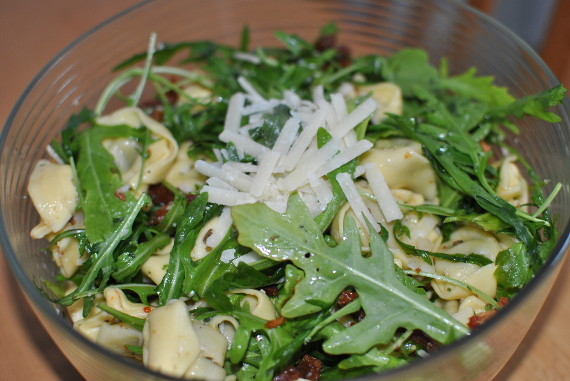

Tortellini-Salat "Siciliana"

Zutaten
- 400 g Tortellini
- 100 g getrocknete Tomaten (eingelegt)
- 75 g Rucola
- 40 g Gran Padano
- 1 Bund Kerbel
- Olivenöl
- Balsamico (hell)
Zubereitung
- Die Tortellini nach Packungshinweis zubereiten.
- Die Tomaten abtropfen lassen und längs in feine Streifen schneiden.
- Rucola putzen und waschen, den Käse hobel und den Kerbel fein schneiden.
- Nach eigenem Geschmack den Balsamico-Essig mit dem Olivenöl, Salz, Pfeffer und Zucker verrühren und mit den restlichen Zutaten mischen.